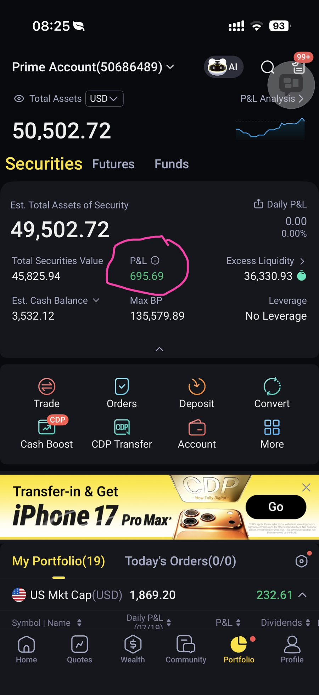
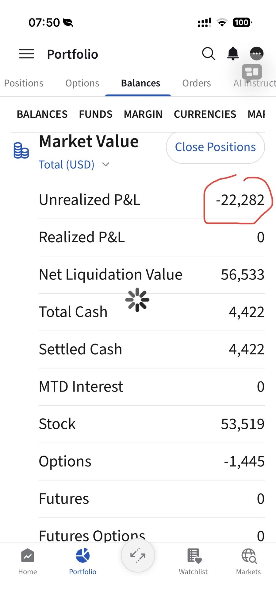
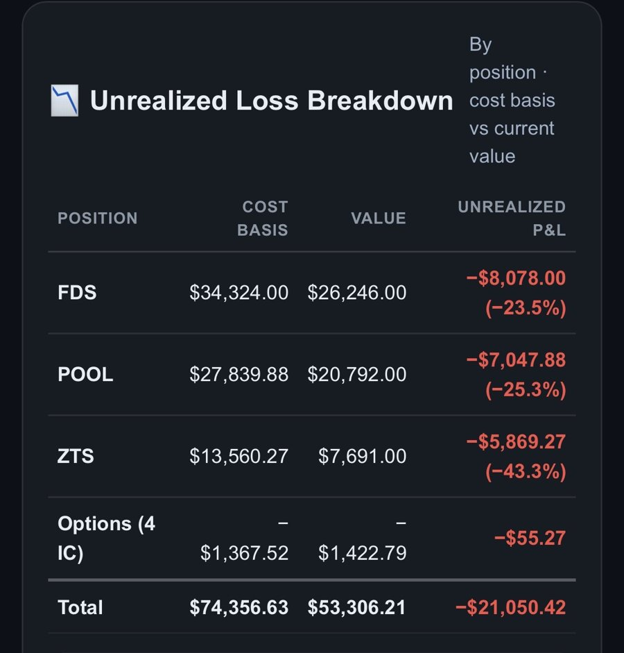
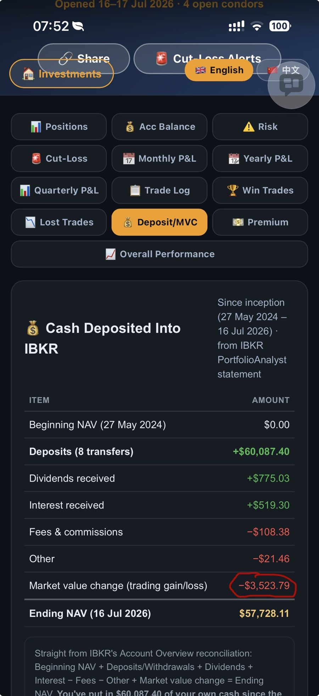

T34: I Thought Options Cost Me $22K — The Real Number Was Almost $0T34：我以为期权让我亏了2.2万——其实真相接近于零
Three years of real trades, pulled straight from my own IBKR statement. The story I believed going in wasn't the story the numbers told.三年真实交易记录，直接取自我自己的IBKR报表。一开始我以为的故事，和数字告诉我的故事，完全不是一回事。
✅ Link copied!
⚠️ Not financial advice. This is a personal reflection on my own trading history, written for my own learning. Numbers are pulled from my real IBKR statement (May 2024 – Jul 2026).非投资建议。这是我对自己交易历史的个人反思，为自己学习所写。数字均取自我真实的IBKR报表（2024年5月–2026年7月）。
Note: this whole article is about my IBKR account only. My Tiger Brokers account is separate and reports P&L differently — Tiger just shows one combined "P&L" number (currently +$695.69) with no separate "Unrealized" line like IBKR has, so the realized-vs-unrealized breakdown above doesn't carry over to Tiger.说明：这篇文章只针对我的IBKR账户。我的老虎证券（Tiger）账户是另一个独立账户，盈亏显示方式也不同——Tiger只显示一个合并的「盈亏」数字（目前为+$695.69），并没有像IBKR那样单独区分「未实现」这一项，所以上面已实现/未实现的拆解方法并不适用于Tiger账户。

A few weeks ago I looked at my portfolio and saw Unrealized P&L: −$22,282 sitting there in red. Three years of trading options, and this was the number staring back at me. My first thought was: "I've lost $22,000 trading options."几周前我打开投资组合，看到红色的未实现盈亏：−$22,282。三年的期权交易，换来这个数字。我的第一反应是：「我做期权亏了2.2万。」
So I asked my AI assistant to pull every single option trade I've made since I started — 57 trades, then narrowed to 53 once you exclude the 4 Iron Condors I still have open — and break down exactly where the money went. What I found surprised me.于是我让AI助手把我开户以来的每一笔期权交易都拉出来——一共57笔，剔除目前仍持有的4个铁鹰后剩53笔——逐一拆解钱到底去了哪里。结果让我很意外。
The number I was afraid of我害怕看到的数字
−$21,050
Unrealized loss across my whole portfolio, per my 16 Jul 2026 IBKR statement截至2026年7月16日IBKR报表，整个投资组合的未实现亏损

The actual screen that started this — Unrealized P&L circled in red on my IBKR app这一切的起点——IBKR应用中用红圈标出的未实现盈亏
📊 Update (19 Jul 2026) — the real number, reconciled against actual cash📊 更新（2026年7月19日）——对照实际入金核实后的真实数字
After I generated this report, I went one step further and reconciled my whole account against the cash I've actually put in — deposits, dividends, interest, fees, all of it — straight from IBKR's own PortfolioAnalyst statement:整理完这份报告后，我又更进一步，把整个账户与我实际投入的现金做了核对——入金、股息、利息、手续费，全部对齐——数据直接来自IBKR自己的PortfolioAnalyst报表：
Item项目
Amount金额
Beginning NAV (27 May 2024)起始净值（2024年5月27日）
$0.00
Deposits (8 transfers)入金（8笔转账）
+$60,087.40
Dividends received已收股息
+$775.03
Interest received已收利息
+$519.30
Fees & commissions手续费及佣金
−$108.38
Other其他
−$21.46
Market value change (trading gain/loss)市值变动（交易盈亏）
−$3,523.79
Ending NAV (16 Jul 2026)期末净值（2026年7月16日）
$57,728.11
So the real trading loss — after accounting for every dollar I actually deposited, plus dividends and interest, minus fees — is −$3,523.79, not $22K and not even the $21K unrealized figure above. That's the number I now trust most, since it reconciles cleanly to my actual ending balance.所以，在算清我实际入金的每一分钱、加上股息利息、扣除手续费之后，真正的交易亏损是−$3,523.79，既不是2.2万，也不是上面提到的2.1万未实现亏损。这是我现在最信得过的数字，因为它能与我实际的期末余额完全对上。
🔍 Where it actually came from🔍 亏损究竟来自哪里
I split that −$21,050 by what caused it: my 3 stock holdings (FDS, POOL, ZTS — bought and held since 2024, never adjusted), versus every option trade I've made in the same period.我把这−$21,050按成因拆开：我的3只股票持仓（FDS、POOL、ZTS——自2024年买入后从未调整），对比同期我做的每一笔期权交易。
3 Stocks3只股票
−$20,995
FDS, POOL, ZTS — bought once, held through the whole declineFDS、POOL、ZTS——买入后一路持有至今，从未止损
Options (open)期权（未平仓）
−$55
The 4 Iron Condors I have open right now目前持有的4个铁鹰

Position持仓
Unrealized P&L未实现盈亏
FDS
−$8,078.00 (−23.5%)
POOL
−$7,047.88 (−25.3%)
ZTS
−$5,869.27 (−43.3%)
Options (4 IC)期权（4个铁鹰）
−$55.27
Total合计
−$21,050.42
The stocks are 99.7% of the loss. The options I still hold are barely a rounding error. Every dollar of the $21K unrealized loss traces straight back to those 3 stock holdings — nothing more, nothing hidden.股票占了亏损的99.7%。目前持有的期权亏损几乎可以忽略不计。这2.1万未实现亏损的每一分钱，都能直接追溯回这3只股票持仓——没有别的，也没有隐藏项。
💵 And the options I already closed? They paid me.💵 那已经平仓的期权呢？它们在给我赚钱
The −$21,050 above only covers what's still open. But most of my option trading over these 3 years has already closed — 53 trades across 25 different stocks, from Aug 2024 through Jul 2026. Add those up and the picture flips completely:上面的−$21,050只涵盖目前仍持有的部分。但这三年里，我大部分期权交易早已平仓——从2024年8月到2026年7月，共53笔交易，涉及25只不同股票。把这些加起来，情况完全反转：
4 open Iron Condors (unrealized, as of 16 Jul)4个未平仓铁鹰（截至7月16日的未实现盈亏）
−$55
Net from options, 3 years期权3年净收益
+$12,715.95
⚠️ Corrected 19 Jul 2026: originally shown as +$27,171 (a cash-flow reconstruction). IBKR's own audited Realized P&L for these 53 closed trades is +$12,770.95 — the figure now shown here.⚠️ 2026年7月19日更正：此前曾显示为+$27,171（由现金流推算得出）。IBKR自身核对过的这53笔已平仓交易的已实现盈亏为+$12,770.95——即现在显示的数字。

Options didn't cost me $22K — they made me nearly $12,771. Weighed against the whole account (stocks, dividends, interest, fees included), IBKR's own reconciliation puts my real all-time trading result at just −$3,523.79 — not the $22K I feared, and not even the $21K unrealized figure above.期权并没有让我亏2.2万——反而为我赚了将近$12,771。把整个账户（股票、股息、利息、手续费全部计入）放在一起看，IBKR自身的核对结果显示，我真正的历史交易结果只有−$3,523.79——既不是我害怕的2.2万，也不是上面提到的2.1万未实现亏损。
📖 Two trades that stuck with me📖 两笔让我印象深刻的交易
The GOOGL call — my biggest single loss (−$1,131)GOOGL认购期权——我单笔最大亏损（−$1,131）
One call option, bought at $17.08, sold at $5.77 — the option's value fell by two-thirds. It's a reminder that a single directional bet can undo dozens of small, careful trades if it goes wrong.一份认购期权，$17.08买入，$5.77卖出——期权价值跌去三分之二。这提醒我：一次方向性押注若判断错误，足以抵消数十笔谨慎的小额交易成果。
The FDS call — a small loss, but the right lesson (−$298)FDS认购期权——亏损不大，但道理讲得清楚（−$298）
A $230 strike call that went against me once FDS traded back above that level. Small loss in isolation, but it's the same underlying stock that's now sitting on an $8,078 unrealized loss as a straight buy-and-hold — the options around it were never the problem.$230行使价的认购期权，因FDS股价重新涨回该水平以上而由盈转亏。单看金额不大，但这正是同一只股票——如今作为纯买入持有，未实现亏损高达$8,078——期权本身从来都不是问题所在。
💰 Which trades actually made me the most money💰 哪些交易真正为我赚了最多钱
Ranking all 53 closed trades by premium, five stand out:把全部53笔已平仓交易按权利金排名，有五笔特别突出：
Trade交易
Premium权利金
ELV, 19 Sep 2025
+$6,273
TMO, 08 Aug 2025
+$1,500
META, 30 Aug 2024
+$1,200
POOL, 21 Nov 2025
+$1,160
ELV, 18 Jul 2025
+$1,150
One honest caveat on that top trade: the $6,273 ELV premium wasn't a skillful call — it was a put I sold that was already deep in the money, after ELV had already crashed hard (it's the single worst-performing stock in my whole account history). Most of that "premium" was really the put's built-in value, not something I earned through good timing.关于榜首这笔交易的诚实说明：这$6,273权利金并非靠精准判断赚来的——这是一份已经深度价内的认沽期权，是在ELV股价已大幅崩跌之后卖出的（ELV是我整个账户历史上表现最差的股票）。这笔「权利金」大部分其实是期权本身的内在价值，而非靠好的择时赚来的。
By total stock, not just one trade: ELV is also my single biggest earner overall at +$8,634 net across all its option trades, followed by LULU (+$2,650) and NVDA (+$2,312). Full breakdown of all 25 stocks I've traded options on is on the T29 page linked below.按股票总计，而非单笔交易：ELV同样是我期权总净收入最高的股票，全部相关交易合计+$8,634，其次是LULU（+$2,650）和NVDA（+$2,312）。我交易过期权的全部25只股票的完整明细见下方T29链接。
❓ Q&A❓ 问答
Q: How did I actually win $6,273 on that one ELV trade?Q：那笔ELV交易到底是怎么赢到$6,273的？
A: I sold 1 put contract — ELV 19 Sep 2025, $350 strike — for $62.73/share, a $6,273 credit, per my IBKR statement. I sold it after ELV had already crashed and shares were trading well below $350, so the put was deep in-the-money the moment I opened it — that's why the premium was so rich. By the 19 Sep 2025 expiry, ELV had climbed back above $350, so the put expired worthless: I closed it for $0 and kept the full $6,273. It's my single biggest winning trade ever, but as the caveat above says, most of that premium was the put's built-in value from selling it ITM during the crash — not something I earned through perfect timing going in.A：我卖出了1份认沽期权——ELV，2025年9月19日到期，行使价$350——按IBKR报表显示，每股收取$62.73权利金，合计$6,273。卖出时ELV已经暴跌，股价远低于$350，所以这份期权在建仓那一刻就已经深度价内——这正是权利金如此丰厚的原因。到2025年9月19日到期时，ELV已回升至$350以上，期权因此变得一文不值：我以$0平仓，$6,273权利金全部落袋。这是我历史上单笔盈利最大的交易，但正如上面的说明，这笔权利金大部分来自卖出时已经价内的内在价值，而非靠精准择时赚来的。
🎯 What I'm taking from this🎯 我从中得到的教训
1. I never had a "why am I still holding this" checkpoint for stocks. FDS, POOL and ZTS were bought once in 2024 and never revisited, even as they kept falling. My options, by contrast, all have a defined expiry — they force a decision.1. 我从来没有为股票设置「为什么还要继续持有」的检查点。FDS、POOL和ZTS在2024年买入后就再未审视，即便股价持续下跌。相比之下，我的每笔期权都有明确到期日——它们逼着我做出决定。
2. Options gave me structure I didn't have for stocks. A defined strike, a defined expiry, a defined max loss going in. That structure is exactly why the options side of my portfolio is fine and the buy-and-hold side isn't.2. 期权给了我在股票上从未有过的纪律。明确的行使价、明确的到期日、进场前就明确的最大亏损。正是这种纪律，让我投资组合中的期权部分表现良好，而买入持有的部分却没有。
3. Before I ever say "I lost money trading X" again, I'm pulling the real numbers first. The story I believed for weeks was completely wrong, and it took one honest look at the data to find that out.3. 以后再说「我做X亏钱了」之前，我会先把真实数字拉出来核实。我坚信了好几周的说法完全错误，只需要老老实实看一眼数据就能发现真相。
4. Tiger's simple P&L display is actually a feature, not a limitation. One combined number is easier to trust at a glance than IBKR's Realized/Unrealized/Options/Stock split — and it was exactly that split, misread, that made me think I'd lost $22K in the first place. IBKR's detail is better when I need to dig into why a number moved, like I just did here, but Tiger's simplicity is the safer everyday gut-check.4. Tiger简洁的盈亏显示其实是优点，而非局限。一个合并的数字，比IBKR的「已实现/未实现/期权/股票」拆分更容易一眼看懂——而正是这种拆分被我误读，才让我一开始以为亏了2.2万。当我需要深挖数字变动的原因时（就像这次一样），IBKR的细节更有用；但日常快速核对，Tiger的简洁更安全。
🚀 My plan from here🚀 接下来的计划
Given the options side of my portfolio is the part that's actually been working, here's what I want to do more of:既然投资组合中真正有效的是期权这部分，接下来我想做更多这类交易：
1. Trade more Iron Condors. I've recently been learning from Mr Bang's live IC training — the 10% short-strike rule, $5 wings, and the DTE 15 exit rule. The 4 condors I have open now are the start, not the whole plan.1. 交易更多铁鹰。我最近一直在跟Bang老师学习现场铁鹰培训——10%短腿法则、$5翼宽，以及DTE15离场法则。目前持有的4个铁鹰只是开始，不是全部计划。
2. Sell covered calls on FDS and POOL. Since I'm holding both at a big unrealized loss anyway, selling calls against them lets me collect premium while I wait — turning two positions that have just been sitting there into ones that are working for me, the same way my other options already have been.2. 对FDS和POOL卖出备兑认购期权。既然这两只股票本来就处于较大未实现亏损中持有，不如卖出认购期权换取权利金——把两个原本只是躺在那里的持仓，变成像我其他期权一样能为我创造收益的部位。